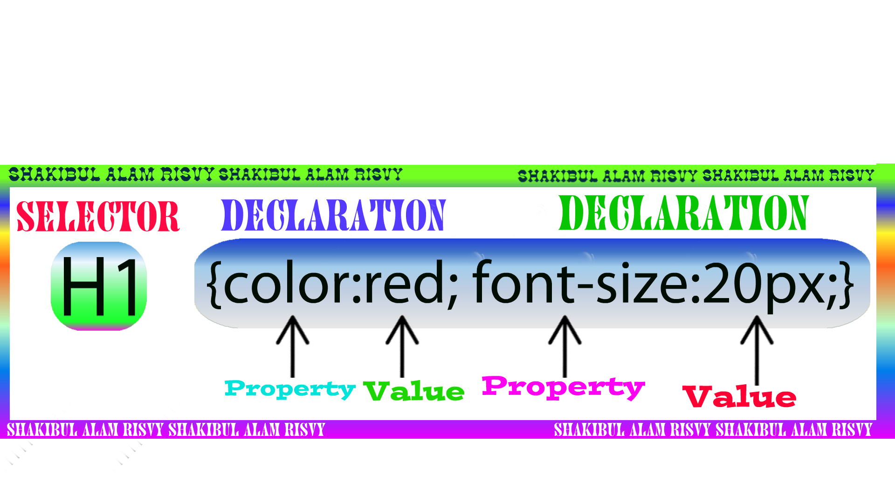

Sintaxis CSS
La sintaxis nos ofrece diversas opciones para agrupar instrucciones de determinados elementos. Veamos un par de ejemplos:
.elemento {
border-top-style: solid;
border-right-style: solid;
border-bottom-style:solid;
border-left-style:solid;
border-top-width: 1px;
border-right-width: 1px;
border-bottom-width: 1px;
border-left-width: 1px;
border-top-color: #336699;
border-right-color: #336699;
border-bottom-color:#336699;
border-left-color:#336699;
}
Puesto que el borde es idéntico en los cuatro lados, las instrucciones se pueden resumir considerablemente:
. elemento {
border: solid 1px #336699;
}
En la forma abreviada todas las propiedades se pueden anotar consecutivamente, separadas por un espacio en blanco. El orden en que aparezcan no tiene mayor importancia.
Posiblemente parecidas se ofrecen, por ejemplo, en margin y padding (distancias exterior e interior)
.elemento {
margin: 5px;
}
El elemento obtiene un margen de 5 pixeles en los cuatro lados incluso cuando son necesarios varios valores, hay muchas cosas que se puede simplificar:
.elemento {
margin: 5px 0;
}
Aquí hemos definido un margen superior e inferior de 5 pixeles, y de 0 pixeles a la derecha e izquierda (al valor 0 [cero] no hay que añadirle ninguna unidad de medida).
.elemento {
margin: 0 5px 10px;
}
Esta sintaxis significa que estamos creando un margen superior de 0 pixeles, un margen a derecha e izquierda de 5 pixeles y un margen inferior de 10 pixeles.
.elemento {
margin: 5px 5px 10px 20px;
}
Aquí tenemos un margen con valores distintos a cada lado. La lectura de los valores se realiza siempre desde arriba y en sentido horario, es decir:
Margen superior = 5 píxeles.
Margen derecho = 5 píxeles.
Margen inferior = 5 píxeles.
Margen izquierdo = 5 píxeles.
En modo de escritura, sin duda, mucho más práctico que una escritura con todos los detalles explícitos:
.elemento {
margin-top: 5px;
margin-right:5px;
margin-bottom:10px
margin-left:20px;
}
Otros elementos que permiten simplificar considerablemente la sintaxis son las familias de etiquetas como y
a:link {
font-family:Arial, sans-serif;
font-weight:bold;
text-decoration:underline;
background-color: #ffffff;
color:#0066ff;
}
a:visited {
font-family: Arial, sans-serif;
font-weight:bold;
text-decoration:underline;
background-color: #ffffff;
color:#006699;
}
a:hover {
font-family: Arial, sans-serif;
font-weight:bold;
text-decoration:underline;
background-color:#ffffff;
color:#000066;
text-decoration:underline overline;
}
a:active, a:focus {
font-family: Arial, sans-serif;
font-weight:bold;
text-decoration:underline;
background-color: #ffffff;
color: #ff9900;
}
La sintaxis siguiente, en cambio, requiere menos líneas de código y ofrece una mayor claridad. En ellas se han agrupado los valores que permanecen iguales, y para el estatus correspondiente sólo se han anotado los valores divergentes:
a {
font-family: Arial, sans-serif;
font-weight:bold;
text-decoration: underline;
background-color:#ffffff;
}
a:link{
color:#0066ff;
}
a:visited{
color:#006699;
}
a:hover {
color:#000066;
text-decoration:underline overline;
}
a:active, a:focus{
color:#ff9900;
}
Incluso los valores para el color, normalmente en notación hexadecimal, también se puede simplificar:
.elemento {
background: #09c;
}
#09c significa aquí #0099cc
–todos los colores con pares formados por valores idénticos, se pueden simplificar de ese modo-
#000000 pasa a ser #000, #bb99ff se convierte en #b9f, #66cc33 cambia a #6c3, etc.
Por el contrario, valores como #000043 o #65ffab no se pueden simplificar.
Sintaxis propietarias
Si observa otros tipos de hojas de estilo, podrá comprobar que los nombres de propiedades de algunas reglas se introducen a veces con guiones.
Esta sintaxis está reservada para las anotaciones específicas de los fabricantes (propietarios) y sólo sirven para probar (testar) las nuevas propiedades. Cada fabricante ha introducido así una abreviatura propia que sirve ara identificar sus anotaciones y propuestas, por ejemplo:
-moz- para Mozilla
-o- para Opera
mso- para Microsoft

"https://cdn.pixabay.com/photo/2017/05/25/01/03/web-page-2341973_1280.jpg"
Delgado, Hugo. (2014). Formas de escritura resumidas y abreviadas en CSS. Recuperado 30 de septiembre, 2021, de https://disenowebakus.net/formas-de-escritura-resumidas-y-abreviadas-en-css.php
Selectores CSS
Selectores para el uso de CSS
Para identificar una etiqueta HTML, se usa los selectores “Selector” y otra parte llamada “Declaración”. El selector iundica a que etiqueta HTML se debe aplicar el formato y la declaración indica que cosas se aplica.
A un mismo elemento de HTML se el pueden asignar muchas propiedades definidas en CSS y estas pueden ser aplciadas
a otros elementos de HTML, Se puede aplicar a un numero infinito de elementos las propiedades que posee CSS.
Los selectores por lo general se declaran entre las las etiquetas de HTML ( head ) (/ head ) y dentro de las de las
etiquetas ( style type = “text/css” ) Y ( /style )
PARTES DE UN SELECTOR
Las partes de un selector son :
Selector { propiedad : valor }
- Selector: es la etiqueta (s) o elementos de HTML
- Propiedad: atributos que se otorga a las etiquetas de HTML
- Valor: Es el valor de la propiedad.

https://upload.wikimedia.org/wikipedia/commons/c/cc/CSS-SELECT_%26_DECLARATION.png
Tinoco, E. E. C., & Solís, I. S. (2014). Programación web con CSS, Javascript, PHP y AJAX. Iván Soria Solís.